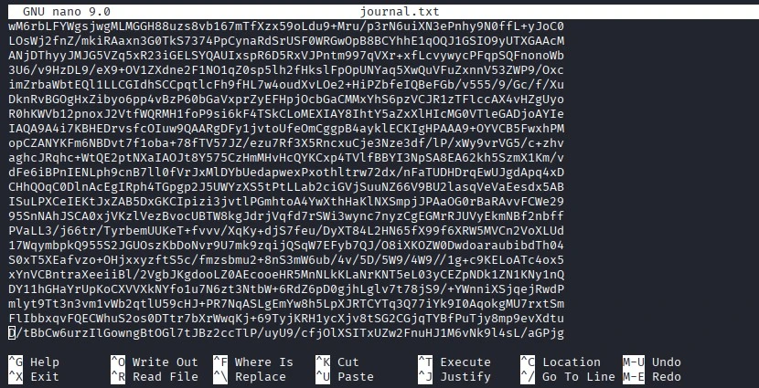
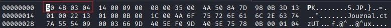
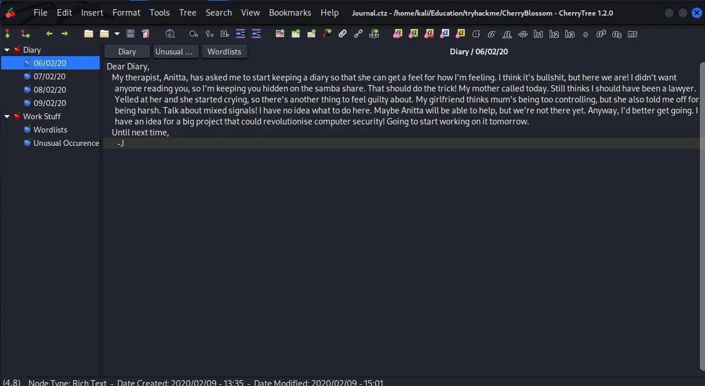
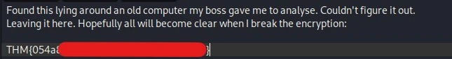
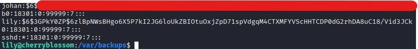
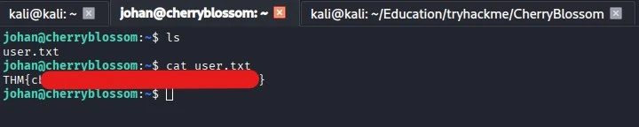
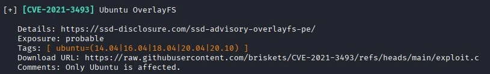
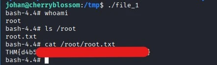

CherryBlossom
Резюме
CherryBlossom — это комната сложности уровня Hard на TryHackMe за авторством MuirlandOracle. В данной комнате представлена машина на Linux. Все начинается со сканирования портов, после которого удается обнаружить открытый порт 445 с работающей службой SMB, где, как выясняется в ходе сканирования, возможен анонимный доступ. После подключения к SMB в доступной шаре был обнаружен закодированный с помощью base64 файл journal.txt. После декодирования и дальнейшего анализа файла было выяснено, что это на самом деле изображение формата png. Из изображения был извлечен файл с расширением .zip, однако file говорил о том, что это jpeg изображение. С помощью изменения магического числа удалось получить исправный архив, который был запаролен. После подбора пароля среди извлеченных файлов оказался 7z архив, который также был запаролен. После успешного подбора пароля содержимое данного архива удалось открыть в приложении Cherrytree (Flag 1). При исследовании содержимого дневника в Cherrytree был найден список паролей, а также имя пользователя lily, что в конечном итоге с помощью перебора пароля привело к получению доступа по SSH. После подключения к пользователю lily в ходе исследования окружения был обнаружен файл shadow.bak, который содержал хэши паролей пользователей в системе. Из данного файла был изъят хэш пароля пользователя johan, подбор пароля был выполнен с использованием ранее найденного списка паролей в приложении Cherrytree. После успешного подбора пароля было выполнено подключение по SSH за пользователя johan (Flag 2). Для дальнейшего повышения привилегий до рут-пользователя была обнаружена и эксплуатирована уязвимость CVE-2021-3493 (Flag 3).
Цепочка атаки
SMB Null Session (Anonymous Login) → Data Deobfuscation (Base64) → Steganography (stegpy) → File Signature Manipulation (Magic Bytes Fix) → Archive Cracking (John the Ripper) → Information Disclosure (Cherrytree DB) → SSH Credential Stuffing (User: lily) → OS Credential Dumping (shadow.bak) → Hash Cracking → Lateral Movement (User: johan) → Sudo Vulnerability (CVE-2021-3493) → Root
MITRE ATT&CK Mapping
| Phase | Tactic | Technique | ID |
|---|---|---|---|
| Network Enumeration | Discovery | Network Service Discovery | T1046 |
| Data Collection | Collection | Data from Network Shared Drive | T1039 |
| Payload Extraction | Defense Evasion | Obfuscated Files or Information: Steganography | T1027.003 |
| Offline Cracking | Credential Access | Brute Force: Password Cracking | T1110.002 |
| Information Gathering | Credential Access | Unsecured Credentials: Credentials In Files | T1552.001 |
| Initial Foothold | Initial Access | Valid Accounts: Local Accounts | T1078.003 |
| Local Enumeration | Credential Access | OS Credential Dumping: /etc/shadow | T1003.008 |
| Lateral Movement | Lateral Movement | Remote Services: SSH | T1021.004 |
| Privilege Escalation | Privelege Escalation | Exploitation for Privilege Escalation | T1068 |
Разведка — T1046, T1039
1 2 3 4 5 6 7 8 9 10 11 12 13 14 15 16 17 18 19 20 21 22 23 24 25 26 27 28 29 30 31 32 33 34 35 36 37 | |
Сканирование хоста с помощью nmap показало три сервиса на трёх открытых портах. Наиболее ценным на этот момент является сервис SMB на 445 порту. Кроме того, применение флага -sC позволило узнать, что к этому сервис разрешен анонимный доступ.
1 2 3 4 5 6 7 8 9 10 11 12 13 14 15 16 | |
После подключения к сервису была обнаружена шара Anonymous.
1 2 3 4 5 6 7 8 9 10 11 | |
Внутри вышеупомянутой шары находился файл journal.txt.
Анализ полученных данных и первый флаг — T1027.003, T1110.002, T1552.001
Исследование файла

Содержимое файла закодировано с помощью base64. Для декодирования была использована утилита base64 с флагом -d.
1 | |
После декодирования содержимое не приобрело читабельный вид, но при использовании утилиты file удалось обнаружить, что в результате декодирования было получено изображение формата png.
1 2 | |
Стеганография
Для анализа изображения на наличие скрытых файлов был использован тул stegpy.
1 2 | |
Применение stegpy позволило извлечь скрытый архив формата zip, при распаковке которого возникла ошибка, сообщающая о том, что архив повреждён.
1 2 3 | |
В ходе дальнейшего анализа полученного архива была применена утилита file, с помощью которой удалось узнать, что файл является изображением формата jpeg.
1 2 | |
В попытке восстановить поврежденный архив была предпринята попытка изменить магическое число файла на магическое число, присущее файлам с расширениям .zip (50 4B 03 04).

Попытка с изменением магического числа увенчалась успехом, но в конечном итоге для распаковки архива потребовался пароль.
Работа с архивами
1 2 3 4 | |
Для подбора пароля к архиву воспользовался связкой тулов zip2john + JohnTheRipper.
1 2 | |
Получшившийся после применения zip2john хэш необходимо передать JohnTheRipper для осуществления подбора пароля. В качестве словаря использовался rockyou.txt.
1 2 3 4 5 | |
При помощи полученного пароля было извлечено содержимое архива.
1 2 3 4 | |
Внутри архива находился ещё один архив, который точно также требовал пароль для распаковки содержимого. Это архив формата 7z, который является производной приложения Cherrytree, являющимся хранилищем заметок. Этот архив можно открыть в данном приложении.
1 2 | |
Для того, чтобы осуществить подбор пароля для архива формата 7z, воспользовался связкой тулов 7z2john + JohnTheRipper.
1 2 | |
Полученный при использовании 7z2john хэш необходимо вновь передать JohnTheRipper для подбора пароля. Использовался словарь rockyou.txt.
1 2 3 4 5 | |
С получением пароля данный архив можно открыть в вышеупомянутом приложении Cherrytree. В результате появится упорядоченный список различных заметок.

Исследование записей
В одной из записей был обнаружен первый флаг.

Среди записей была обнаружена ещё одна примечательная: в ней автор рассказывал о составленном им списке паролей. Сам список паролей был прикреплен к одной из записей. Кроме того, было упомянуто имя lily. С учетом полученного имени пользователя и списка паролей было решено воспользоваться hydra для подбора пароля и дальнейшего подключения к ssh (22 порт).
1 2 3 4 5 | |
После успешного подбора пароля был осуществлён успешный вход по ssh за пользователя lily.
1 2 3 4 5 6 7 8 | |
Lateral Movement и второй флаг — T1003.008, T1110.002, T1021.004
После успешного входа за lily было выполнено исследование окружение, которое в конечном итоге позволило обнаружить бэкап файла shadow по пути /var/backups/shadow.bak.
1 2 3 | |
При исследовании окружения ранее было замечено наличие еще одной папки пользователя в директории /home по имени johan. Именно его хэш был извлечен из обнаруженного shadow.bak.

Для подбора пароля с использованием полученного хэша был применен тул hashcat. Использовался ранее полученный словарь в приложении Cherrytree.
1 | |
С помощью полученного пароля был осуществлен в ход за пользователя johan. В домашней директории пользовался находился второй флаг в файле user.txt.

Повышение привилегий, третий флаг — T1068
После получения доступа к системе в качестве johan было принято решение воспользоваться тулом Linux Exploit Suggester для сканирования системы на предмет CVE, к которым она уязвима.

Среди обнаруженных результатов выбор пал на CVE-2021-3493. Для эксплуатации уязвимости на целевую систему с помощью scp был перемещён PoC для данной CVE, который был заранее скомпиллирован на атакующей машине.
1 | |
Уязвимость была успешно эксплуатирована, и в конечном итоге были получены рут права в системе. Третий флаг находился по пути /root/root.txt. Все три флага были добыты.

Извлеченные уроки
- Отключить возможность анонимного доступа к общим сетевым папкам. Именно из-за того, что к сервису SMB был возможен анонимный доступ, был получен файл, содержащий чувствительные данные, который в итоге привел к доступу к системе по ssh.
- Следить за правами доступа к чувствительным файлам в системе. Только потому, что найденный бэкап файла
shadowпредполагал права на чтение для всех пользователей, удалось извлечь хэш ещё одного пользователя в системе, который в конечном итоге привел к горизонтальному перемещению. - Своевременно обновлять систему. Из-за отсутствия необходимых патчей система была уязвима к
CVE-2021-3493.